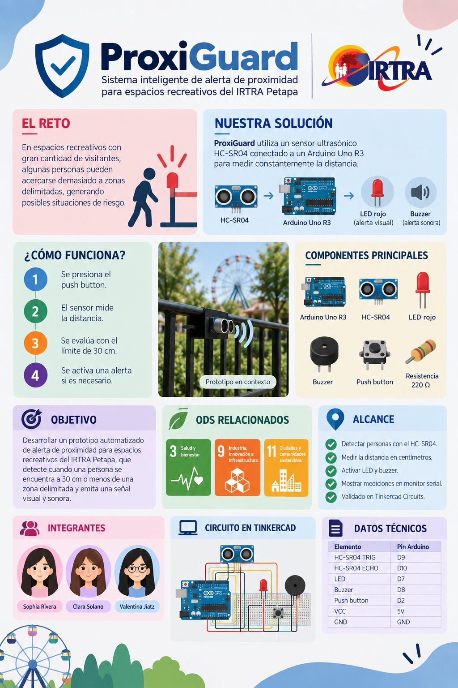
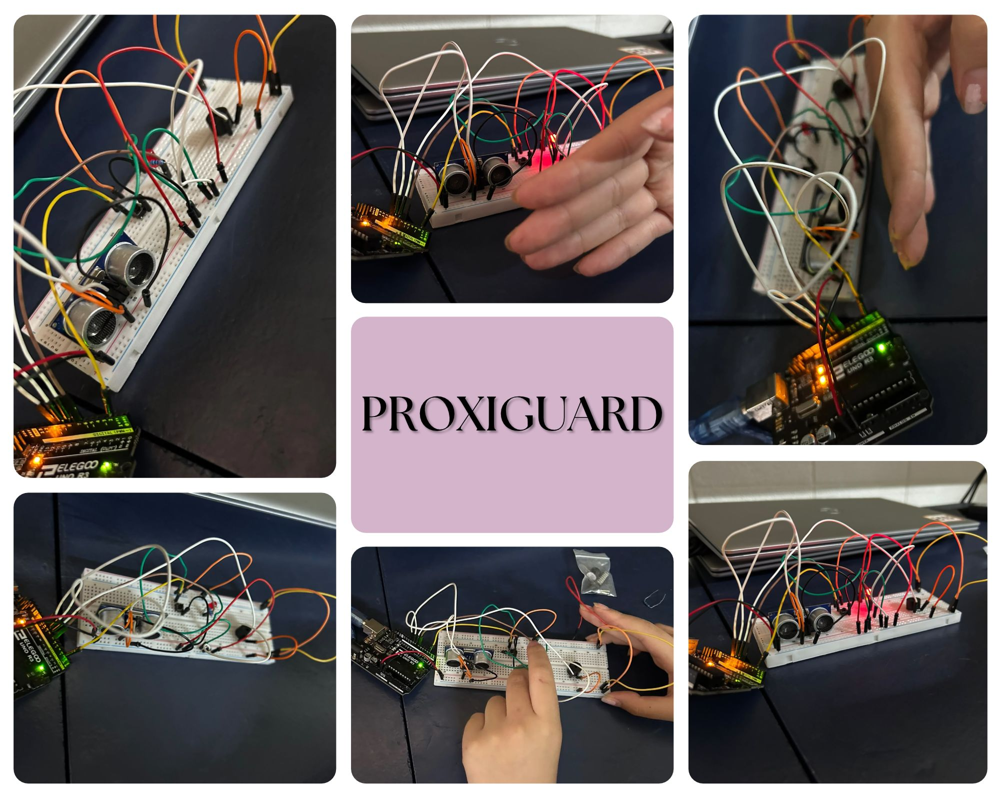

Podcast sobre ProxiGuard
Escucha y mira la explicación detallada de nuestro proyecto, los desafíos que tuvimos y la solución propuesta para la atracción Tifón.
Documento PROXIGUARD
Consulta toda la investigación, diseño del prototipo y documentación técnica del sistema de seguridad.
PROXIGUARD Info
Resumen visual explicativo sobre el funcionamiento del sensor ultrasónico y sus alertas de proximidad.

Video de Circuito en Tinkercad
Demostración y simulación virtual del circuito, conexiones de componentes y lógica del código Arduino.
Collage del Proceso
Compilación fotográfica del proceso de desarrollo y ensamblaje de nuestro proyecto.

Video del Circuito IRL (En la Vida Real)
Demostración del circuito armado físicamente con Arduino, sensor ultrasónico y alertas sonoras/luminosas funcionando en tiempo real.
¡Gracias por acompañarnos!
Queremos agradecer a nuestros profesores, compañeros y al personal de apoyo por guiarnos durante la elaboración de este proyecto. Su apoyo técnico y retroalimentación fueron fundamentales para hacer de ProxiGuard una realidad.